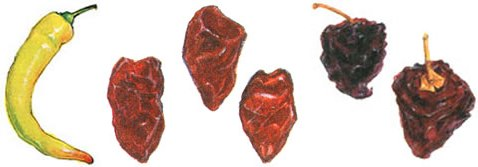
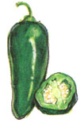
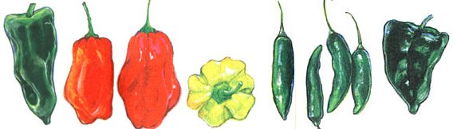

The Flouring Inferno
December/January 1998
MOTHER'S KITCHEN
by Anne Vassal
Everyone, it seems, has a hot pepper story. Maybe you've burst out of a Thai restaurant with sweat oozing from your every pore. Perhaps in your ancient past there's a hot pepper fraternity initiation. Or you might have taken revenge on your bratty little brother by poisoning his food, otherwise known as "the hot pepper pudding incident." (I never stooped to such a level; my tactics were more devious, as my brothers will testify.)
My own chili experiences consist of burning my hands, face, and eyes, and trashing my contact lenses, due to improper chili handling. I've had repeat performances, because I was in a cooking frenzy and didn't feel like wearing surgical gloves.
My son has a weird reaction if he eats a food that's too hot and spicy for him; he hiccups nonstop for about ten minutes. He's the in-house hot meter. If Matt hiccups, then Mom overdid it with Dad's garden peppers.
Before my husband's garden existed, a chili was considered a dangerously hot pepper, only to be used sparingly in Mexican food. It never occurred to us that each variety of chili has its own distinct flavor and unique hotness. So what makes a chili so damned hot? The heat comes from capsaicinoids, which act on your mouth's pain receptors, resulting in tearing eyes, runny nose, and a sweating body. A euphoric high then occurs when your brain releases endorphins in response to the pain caused by the peppers. Capsaicin (capSAY-ah-sin) is an oil found mainly in the veins, or white parts, of the chili, which can be removed for a milder flavor. It's also a good idea to remove the seeds with the veins so you won't find any floating in your salsa. The heat of a pepper is measured by Scoville units, developed in 1912 by food scientist Wilbur Scoville. For example, a bell pepper without any capsaicin would be zero, a jalapeño rates about 4,000 units, and a habanero chili scores up to 300,000 units. In general, the smaller and pointier the pepper, the hotter it tastes.
After reminiscing on our hot pepper experiences, we wonder why we'd want to continue to consume the hot stuff. Aside from flavoring the food, chilies have other benefits. They contain cancer-fighting antioxidants such as beta carotene and are high in vitamins A and C. Capsaicin helps you to bum more calories by increasing your metabolism, and it stimulates circulation in the stomach and intestine, resulting in better digestion. Cayenne pepper lowers cholesterol by lowering the LDLs (low density lipids) without affecting the HDLs (high density lipids). Research has disproved the theory that peppers cause ulcers and intestinal damage. People with existing ulcers may want to check with their doctors before eating peppers.
Growing peppers is as fun as eating them. Here are a few ideas for storing your garden chilies.
Freezing Chilies
Write the variety and date on a small, Ziplock freezer bag, using a permanent marker. (I use a different color every year, so it's easier to locate last years produce.) Put whole chilies in the bag and freeze for up to a year; after that, the flavor starts to disintegrate. Larger peppers, such as poblano, will need to be cut in half with the stem and seeds removed. Another freezing method is to remove the seeds and stems, mince in the food processor, spoon into a freezer bag, and freeze.
Later, just break off apiece and throw it into whatever is cooking. Use within three months.
Drying Chilies
Some varieties work better than others. Jalapeños, for example, are juicy with a thick skin, so they'll mold before they'll dry out. Our general rule is to dry only mature red chilies and to use skinny varieties with thin skins such as cayennes. The cayennes look nice hung up on a string to dry, but laying them on a plate will work just as well. Keep them in a dry place for at least a week before storing them in a jar. Sometimes, if we have a surprise frost, we cut down the pepper plants and bring them inside. We rubberband the branches together and hang the plants upside down to dry. I've had one hanging next to the kitchen window all winter, so I can pick a pepper whenever I need one.
Chili Relief" de Queso (Medium-Hot)
When I was teaching in a Headstart program, a Latina mom brought some homemade chili rellenos to school. I thought they were so delicious that I asked her to teach me how to make them.
6 to 8 medium green poblano peppers (The red poblanos are too hot.)
4 eggs, separated
1/4 teaspoon salt
about 1/2 cup flour, for dipping
1 medium onion, chopped fine
1/2 pound Mexican Chihuahua cheese or Muenster or Monterey Jack canola oil
Lay the peppers on a foil-lined cookie sheet. Roast under the broiler until mostly blackened on all sides, turning them as needed. Cool and remove blackened skins. Make a one-inch cut from the stem down on each pepper. To remove the seed duster, cut just below the stem, keeping the stem intact. This is tricky because you want the stem to remain on the pepper. Saute the onion in a few drops of oil and let cool a few minutes. Grate the cheese and mix in a bowl with the onions. Have a large nonstick skillet ready. Put some flour in a shallow dish. To stuff the peppers, push the cheese through the opening. (They shouldn't be packed with cheese.) Roll each pepper in flour. Using an electric mixer, beat the egg whites in a shallow mixing bowl until fluffy but not stiff. In a separate bowl, beat the egg yolks and salt. Fold them into the egg whites.
Heat the skillet on medium-high heat and add a tablespoon of oil. Dip a floured poblano carefully into the egg mixture, rolling it if you need to so the pepper will be generously covered. Place into the hot skillet (it should sizzle). Repeat the process until the pan is full. Turn the poblanos over after about a minute and keep turning until they're browned on all sides, adding a few more drops of oil at a time as needed. Lay on the foil-lined cookie sheet and keep warm in a 300°F oven for up to 15 minutes, if needed.
Black Bean Salad Burrito (Makes 3 to 4 Burritos)
Cut any leftover corn off the cobs and save for this salad. Any not-too-hot garden peppers can be used.
1 fifteen-ounce can black beans, rinsed
1 cup fresh corn, cooked (about 2 ears)
1 banana or Anaheim pepper; seeded and diced
4 green onions, chopped
1/2 cup cilantro leaves, chopped
Dressing:
2 tablespoons each: lime juice, olive oil
1 small jalapeño or serrano pepper, seeded and minced
1 teaspoon cumin seed, toasted
1/4 teaspoon salt, freshly ground pepper
large flour tortillas (we use wholewheat or the colored sun-dried tomato tortillas)
grated Muenster or Chihuahua cheese
(optional) chopped tomatoes for garnish
If you don't have leftover corn, cut the corn off the cobs and saute in a few drops of oil, then cool. Toast the cumin seeds in a dry skillet for a minute or so over medium-high heat, stirring frequently, until fragrant. In a mixing bowl, toss the salad ingredients together. In another bowl, whisk the dressing together. You may want to start with half of a hot pepper and add more if you want the salad hotter. Serve, or chill for a few hours until needed. Spoon some salad into the middle of each tortilla, roll up, and garnish with cheese and tomato. If you prefer, you can warm the tortillas in the microwave or in the oven wrapped in foil. A fast way is to heat them one at a time in a large skillet over medium-high heat, flipping them over after about 30 seconds.
Chicken Curry (Spicy Hot, Serves 4)
The best part about this curry is all the garden vegetables that you can use for the toppings. It only takes about 30 minutes to prepare. (Go easy on the hot pepper at first; you can always add more later.)
3 cups long grain or basmati brown rice
1 tablespoon olive oil
1 1/2 to 2 lbs. boneless chicken thighs (about 8 to 10 pieces)
1 large onion, chopped
3 large garlic cloves, minced
1 one-inch piece fresh ginger root, grated
1 small jalapeño or cayenne pepper, seeded and minced
2 tablespoons of a good quality curry powder (make sure it's fresh)
2 teaspoons garam marsala*
1 tablespoon white flour
1 can unsalted chicken broth (2 cups)
1/2 cup coconut milk (I used "Lite, " which is lower in fat)
salt to taste
Topping possibilities: cucumber, diced tomato, diced red onions, chopped green onions, red, yellow, or green sweet peppers, diced semi-hotpeppers, cilantro, parsley, or basil, chopped golden raisins or currants
Cook the rice while you're preparing the chicken. (Boil six cups of water, stir in the brown rice, cover, and simmer on low heat for 40 minutes.) In a large skillet, heat the oil and saute the chicken over medium heat until browned on all sides. Remove the chicken from the pan and place in a container; save the oil in the pan. Saute the onions until limp, then add the garlic, ginger, and hot pepper. Saute a minute or so and then stir in the curry powder, garam marsala, and flour, stirring until fragrant. Stir in the chicken broth and coconut. Put the chicken back into the pan, cover, and simmer for 20 minutes until the chicken is done. Cut up the toppings and put into small bowls. The chicken can then be served over rice or cooled and refrigerated up to two days. Make sure to pass around the toppings.
*Garam marsala: like curry powder, this is a spice blend that needs to be fresh. It contains cardamom, cinnamon, coriander, cumin, cloves, and pepper.
Mango or Nectarine Relish
Spicy and sweet, makes a tasty relish to use on grilled fish or chicken.
2 ripe but firm mangos (or nectarines)
1/2 red pepper
1/2 cayenne pepper seeded and chopped
2 to 3 tablespoons fresh lime juice
3 green onions, chopped
dash of salt
dash of sugar
Here's how to cut a mango so it's not a mushy mess: cut it into quarters lengthwise. Then cut the quarters away from the pit, slicing as close to the pit as possible. Cut the pulp out of the skins; this should give you eight mango wedges. Cut into 1/4- to 1/2-inch dice along with the red pepper. Toss all the ingredients together and let sit for at least 30 minutes before serving.
Too Hot to Handle?
To avoid burning your skin, eyes, and other body parts, always wear kitchen rubber gloves or surgical gloves when working with chilies.
Once the capsaicin oil gets on your hands, it's there to stay for at least a few hours. Wash the knives, cutting board, and any utensils that came in contact with the peppers with soapy water before continuing with the food preparation. If your hands should come in contact with some of the chili oil, wash them in cold water, dry, and treat with vitamin E as you would a burn. Avoid touching your face and eyes. Never wash the area with soap and hot water; that seems to increase the burning.
|
 (LEFT) Banana: These crisp, pale yellow to orange-red peppers range from mild to slightly hot and are easy to grow. Like the Anaheim, they can be used as you would a sweet pepper. Both peppers add variety and color to your favorite summer dishes. (MIDDLE) Chipotle: This is a smoked and dried jalape?o, which is usually found canned at the Mexican grocery or in the imported foods aisle. Chipotles add a rich, smoky flavor to salsas and sauces. (RIGHT) Ancho: This is a smoked and dried poblano, which transforms it into a brownish wrinkled chili. It can be found in Latino grocery stores and is rehydrated to make sauces and soups, giving dishes a smoky flavor. |
 (LEFT) Jalape?o: Probably the most fluently used and most available chili, jalape?o are picked green commercially but we let ours ripen until they're red, which makes them even hotter. This firm, compact chili is easy to chop up and use in dishes where you want some heat. |
Cayenne: Red cayennes usually grow to about six inches in length, although the ones in our garden only grow to about three inches. These are the chilies that are dried and ground into spice powder or used for bottled hot sauces. |
|
 (FROM LEFT) Anaheim: These long, lime green chilies are usually mild (sweet), so there perfect for salads instead of raw green peppers. Since they have a thick skin, they can also be roasted, peeled, and added to recipes. Habanero : The hottest of chilies, this lantern-shaped pepper is usually a yellow-orange color and sometimes red. The heat will sneak up on you, so watch out. I don't recommend eating them raw unless you want to blast off. Serrano: We think the green, bullet-shaped serrano is the perfect; all-around chile. Firm, with a fresh flavor, it's perfect for salsas. Because serranos have consistent heat, we use them the most fluently. Poblano: A skinny version of a green pepper, the poblano is a darker green with just enough hot stuff to make your recipe more interesting. I use these any time I want extra zip in omelettes, bean salads, and many other dishes. If you let your poblanos ripen on the vine until there red (or a brownish-red), they'll get hot, so beware. Poblanos are great roasted and can be frozen roasted or raw in freezer bags for later use. (see ""freezing peppers."") (ILLUSTRATIONS: KHRISTINE REAM) |
 |
|